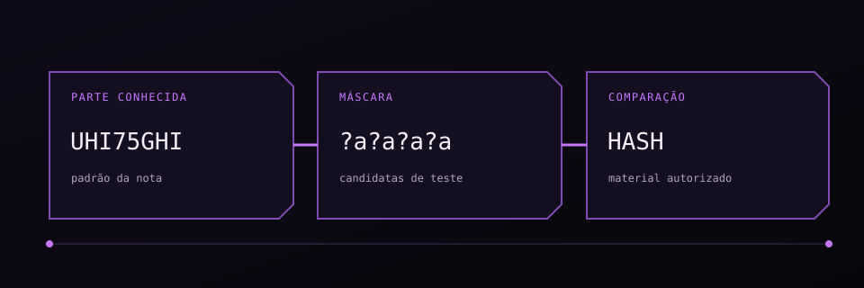

Antes de testar uma senha ou hash, identifique o formato, o material disponível e o objetivo: recuperar um arquivo próprio, avaliar a força de um segredo ou revisar uma configuração de autenticação.
01 / Hashcat e padrões conhecidos
Se você conhece parte da senha e tem o hash, teste os caracteres restantes com uma máscara. Aqui, MD5 é usado para demonstrar quatro caracteres desconhecidos em um laboratório.
hashcat -a 3 -m 0 HASH_MD5 UHI75GHI?a?a?a?a-a 3 seleciona ataque de máscara; -m 0 indica MD5. A máscara ?a representa o conjunto amplo de caracteres do Hashcat. Para gerar candidatas com regra:
hashcat --stdout pass.txt -r /usr/share/hashcat/rules/best64.rule > passwords.txtO objetivo defensivo é avaliar se segredos previsíveis resistem às políticas e ao armazenamento escolhidos. MD5 puro não é apropriado para armazenar senhas.

Máscara e wordlist
Quando você ja tem uma parte da senha e a sua hash, você pode usar o hashcat para descobrir o restante, basta seguir alguns passos
Para o exemplo iremos usar uma comparação de md5
# valores a serem usados
pass: UHI75GHI****
md5: 0feda17076d793c2ef2870d7427ad4ed
# comando para hashcat
hashcat -a 3 -m 0 0feda17076d793c2ef2870d7427ad4ed UHI75GHI?a?a?a?a
- Criando uma wordlist
# crie um arquivo com a palavra que voce quer gerar a wordlist
vim pass.txt
[put the variations pass]
# comando para gerar wordlist
hashcat --stdout pass.txt -r /usr/share/hashcat/rules/best64.rule > passwords.txt
02 / Arquivos ZIP protegidos
Para testar um ZIP protegido com uma wordlist, use fcrackzip. Confirme o formato do arquivo e a permissão para realizar a recuperação.
fcrackzip -D -p wordlist.txt arquivo.zipRegistre versão do formato, tamanho do arquivo e resultado. Evite colocar senhas recuperadas no relatório público.
fcrackzip com wordlist
- fcrackzip
fcrackzip -D -p wordlist.txt file.zip
03 / Coleta e análise de material
Separe coleta de material e análise local. Com NetExec, valide primeiro a autenticação e as permissões SMB; pypykatz pode ser usado quando houver material de memória obtido dentro do escopo. Remova artefatos sensíveis ao final.
Para enumeração de SMB, consulte SMB e Active Directory ↗.
Coleta SMB com NetExec
- Dump hash
netexec smb dominio.com -u "usuario" -p "senha" --sam
04 / Segredos de JWT
O modo 16500 do Hashcat testa segredos de assinatura JWT. Isso é diferente de alg: none, que depende de uma falha na validação do token.
hashcat -a 0 -m 16500 TOKEN_DE_LAB wordlist.txtUse chaves de alta entropia, algoritmos fixados pelo servidor e rotação adequada. A explicação de JWT está em Web Hacking ↗.